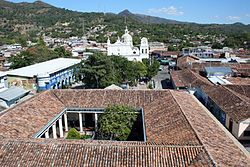
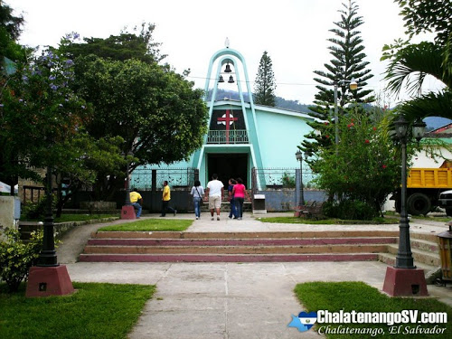

Chalatenango
Chalatenango es un departamento de El Salvador. Su cabecera departamental es Chalatenango, se encuentra ubicado al norte de la capital del país, San Salvador, fronterizo con Honduras. En este departamento se ubica el cerro El Pital con 2730 m de altitud sobre el nivel del mar, el punto más elevado del país. El clima más frío de El Salvador tiene lugar en estas alturas.

Municipios
Agua Caliente
Arcatao
Azacualpa
Cancasque
Chalatenango (ciudad)
Citalá
Comapala
Concepción Quezaltepeque
Dulce Nombre de María
El Carrizal
El Paraíso
La Laguna
La Palma
La Reina
Las Flores
Las Vueltas
Nombre de Jesús
Nueva Concepción
Nueva Trinidad
Ojos de Agua
Potonico
San Antonio de la Cruz
San Antonio Los Ranchos
San Fernando
San Francisco Lempa
San Francisco Morazán
San Ignacio
San Isidro Labrador
San Luis del Carmen
San Miguel de Mercedes
San Rafael
Santa Rita
Tejutla
Cabezera departamental
Chalatenango es la cabecera del Departamento homónimo de El Salvador. Su territorio se divide en 6 cantones y 36 caseríos. En 2007 la población era de 29 271 habitantes según censo de 2007. La extensión territorial del municipio está distribuida de tal manera que tiene un área rural de 131,05 km² aproximadamente y un área urbana de 0,75 km² aproximadamente.
Produccion artesanal
En Cantón Upatoro, Cantón Chiapas, Guarjila y el casco urbano se trabaja la jarcia de forma dispersa e in visibilizada.
Elaboración y reproducción de libros sobre la historia de las comunidades repobladas o las que se encuentran deshabitadas en otros municipios.
En Cantón Las Minas se trabaja la jarcia, alfarería, y panadería tradicional
En Cantón San José Don Mateo tiene un trapiche tradicional de madera en la que se hace “la molienda”: se hace miel de todo tipo, batido, dulce, cada año. Las moliendas producen muy poco, algunas solo sacan caldo y otras ni siquiera eso.
En Reubicaciones hay gente que hace el almidón de yuca y fabrican atarrayas y hamacas.
Canton Chiapas lugar de nacimiento del nuevo Obispo de Chalatenago Fray Oswaldo Stefano Escobar Aguilar toma posesión de su nombramiento sábado 1 octubre 2016 de la catedral de Chalatenago siendo hijo de Maria Julia Aguilar y Antonio Esteban Escobar Alvarenga siendo una familia de humilde de canton chiapas 100% chalatecos
